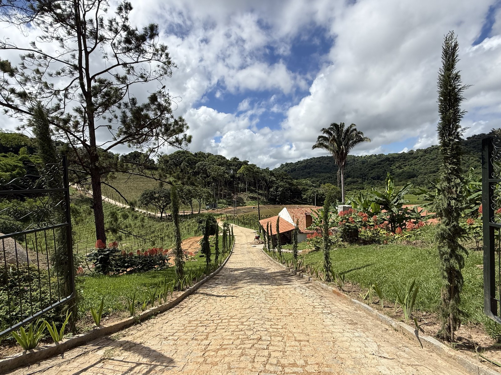
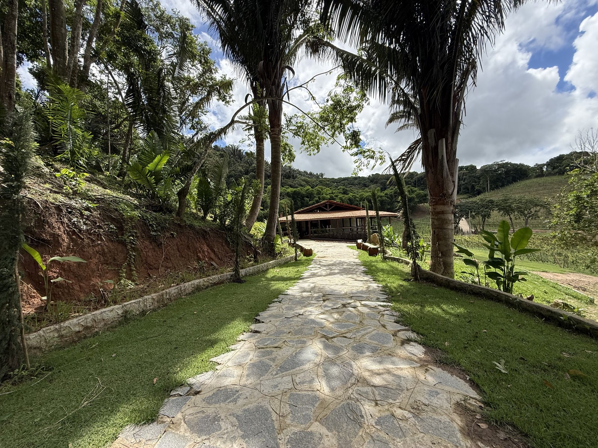
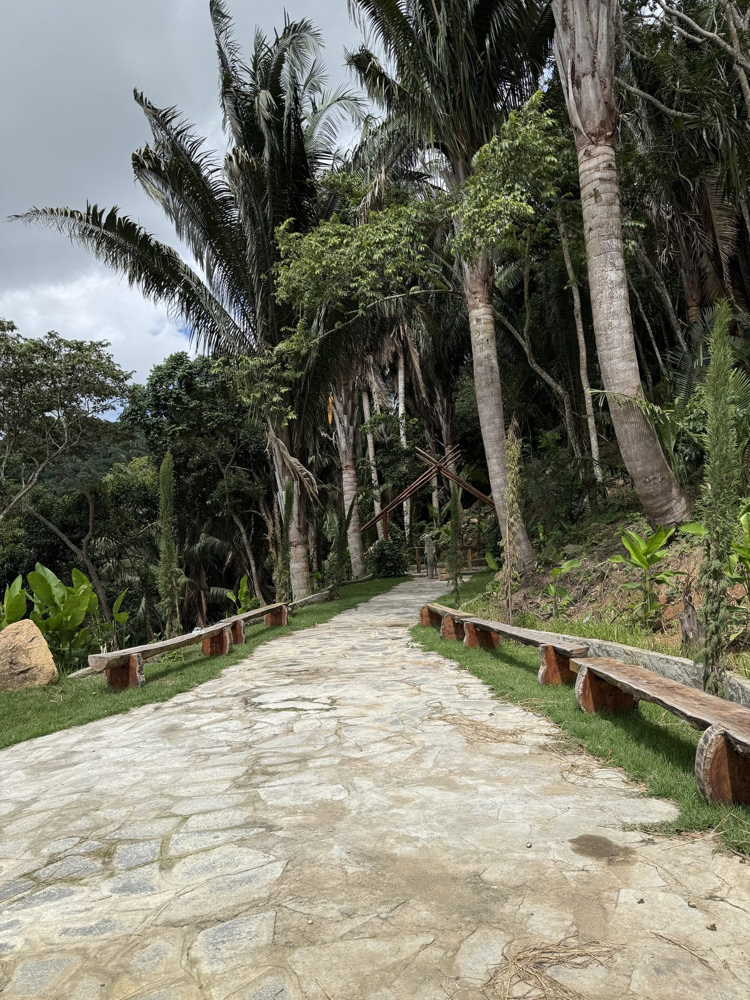
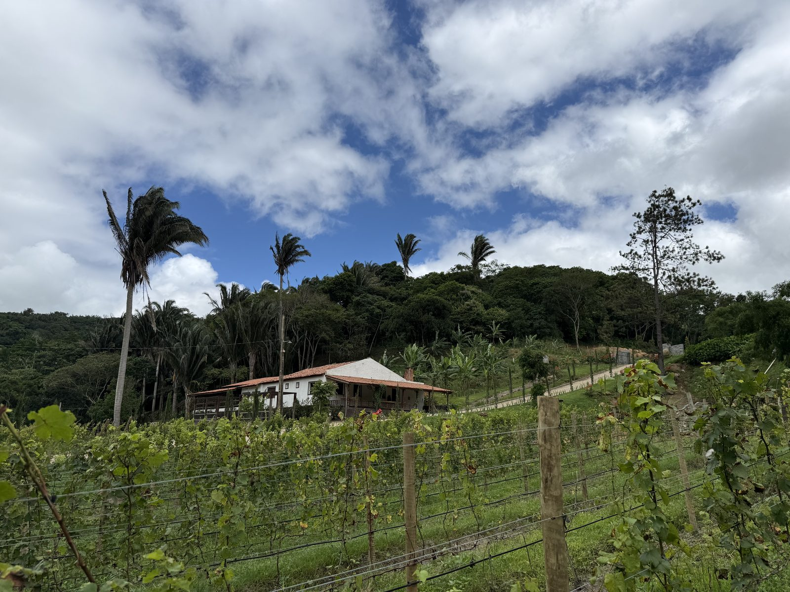
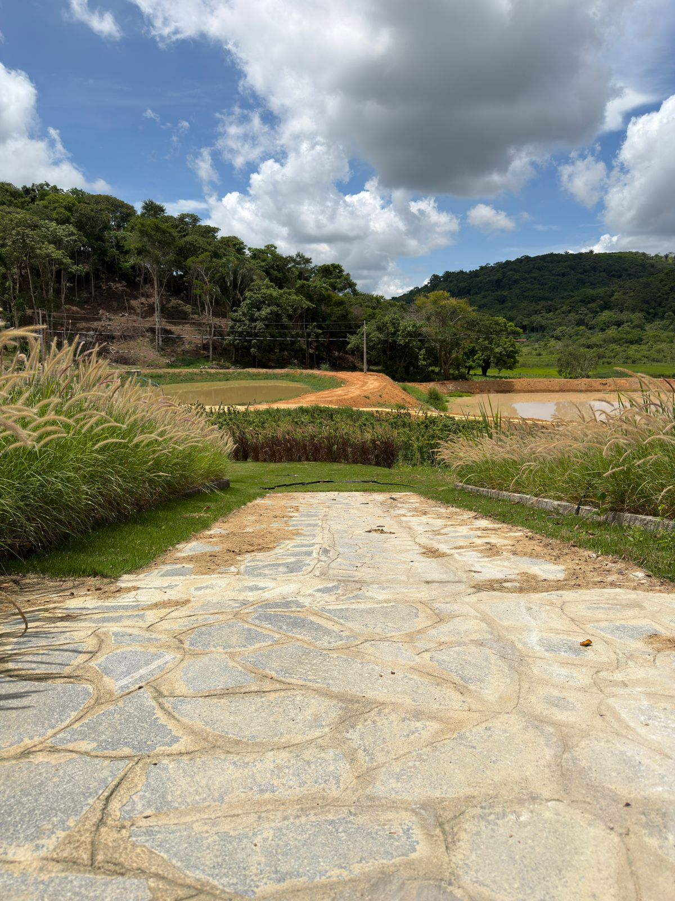
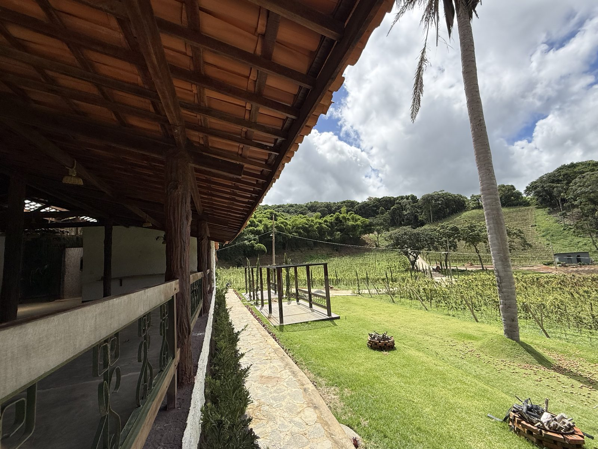
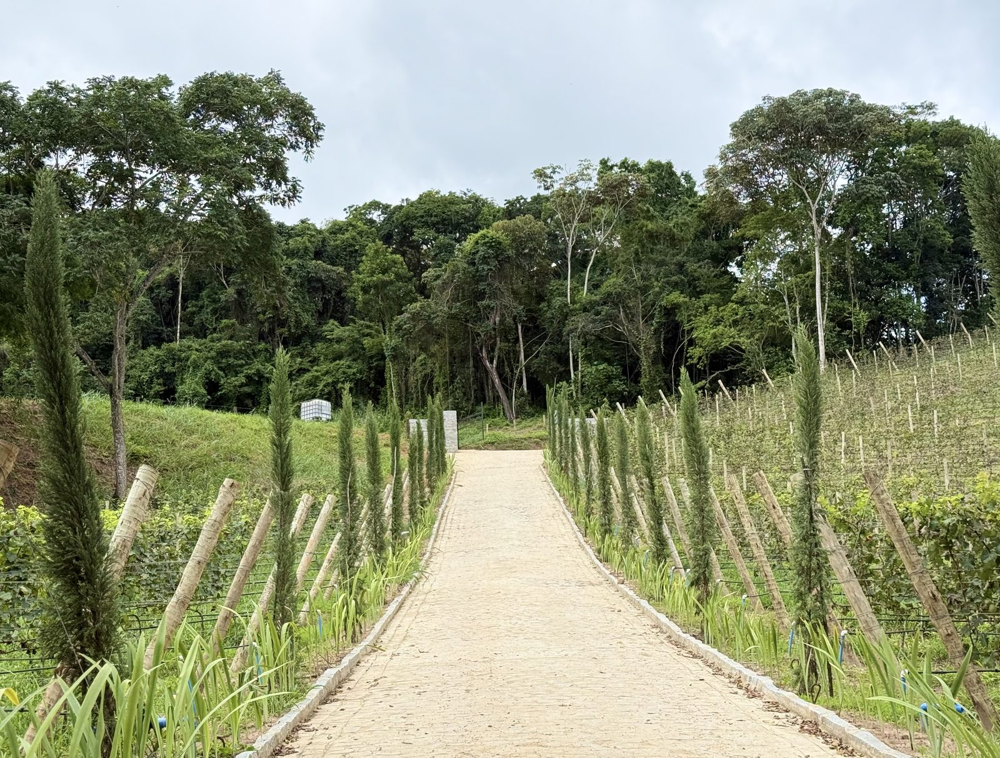

A História
Antes da primeira taça, a primeira palavra. Sente-se à sombra da Casa, ouça a saga da família Ferreira atravessar gerações, e deixe um espumante pontuar cada virada da narrativa, acompanhado de uma tábua de frios cuidadosamente composta.
Bananeiras · Paraíba · Brasil
A única experiência da Paraíba que une enoturismo, gastronomia e legado
Não vendemos vinho, criamos memórias através de experiências.


+ de 150 anos de história em uma propriedade no coração da Serra Paraibana.
A única experiência da Paraíba que une enoturismo, gastronomia e história real, uma tarde que vira saudade, e da qual só se cura voltando.
Existe uma tarde em Bananeiras diferente de todas as outras.
Ela começa com uma história e um espumante para brindá-la.
Atravessa o terroir, que se traduz em um vinho branco.
E termina à mesa, no gesto do chef.
Cada tarde na Casa Ferreira se desenrola em três atos: história, terroir e mesa.
Antes da primeira taça, a primeira palavra. Sente-se à sombra da Casa, ouça a saga da família Ferreira atravessar gerações, e deixe um espumante pontuar cada virada da narrativa, acompanhado de uma tábua de frios cuidadosamente composta.
Aqui o solo fala. Conheça o terroir da Serra Paraibana e as quatro castas que foram escolhidas para plantar nesta terra, enquanto a degustação se desdobra no vinho branco, traduzindo Bananeiras em cada gole.
A tarde encontra seu desfecho à mesa. Prato principal e sobremesa, harmonizados com o vinho tinto e narrados pelo chef, cada gesto uma assinatura que prolonga a memória muito depois da última taça.
Uma experiência cuidadosamente desenhada para que cada gole, cada palavra e cada gesto se inscrevam na memória.
O sol da Serra Paraibana abrindo a mesa.
Três atos sem pressa, no compasso lento da tarde.
Patriarca e matriarca contando, em primeira pessoa, a saga que abre o coração.
Espumante, branco e tinto, cada um pontuando um ato.
Tábua de frios, mesa posta e sobremesa, cada gesto assinado pelo chef.
A 600m de altitude, a Serra Paraibana se desenha como anfitriã.





Na Região da Serra Paraibana, a 600 metros de altitude, Bananeiras guarda uma das paisagens mais singulares do Nordeste, e desde agora, um dos destinos mais promissores do turismo de alto padrão no Brasil.